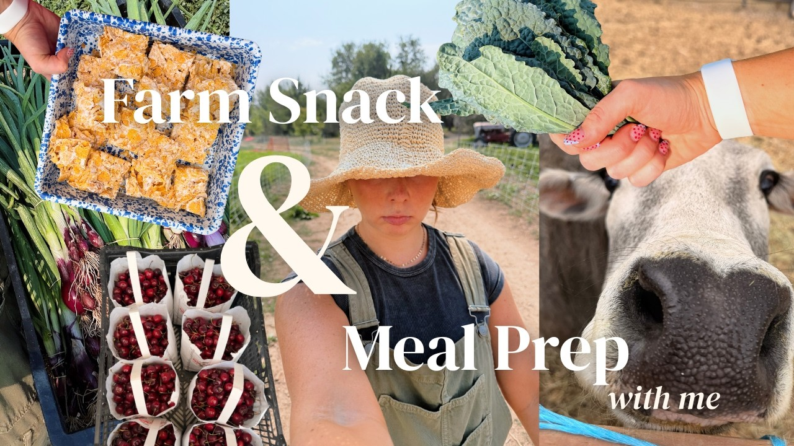
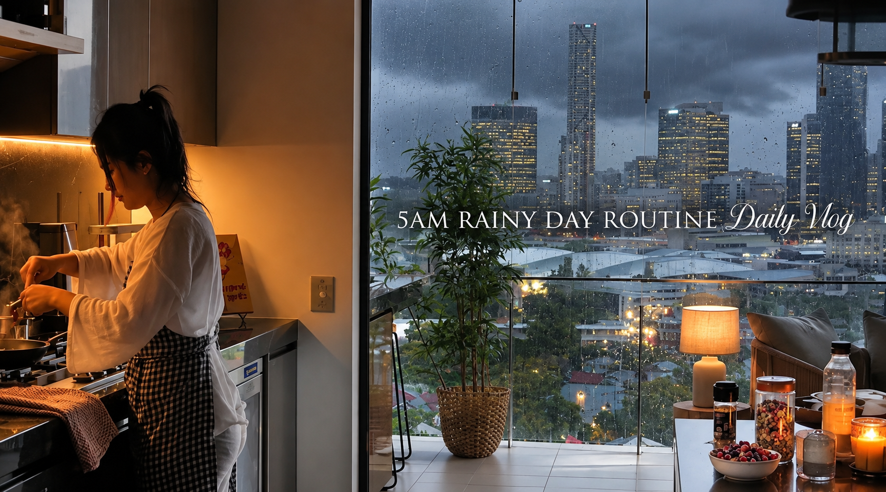
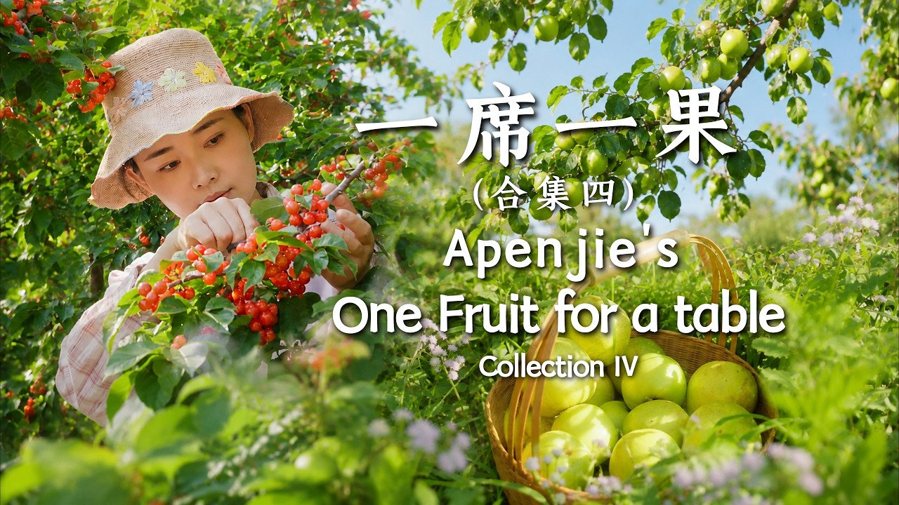
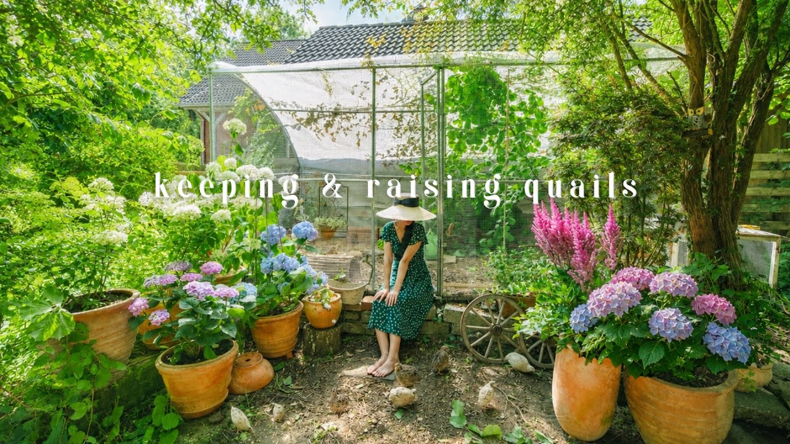
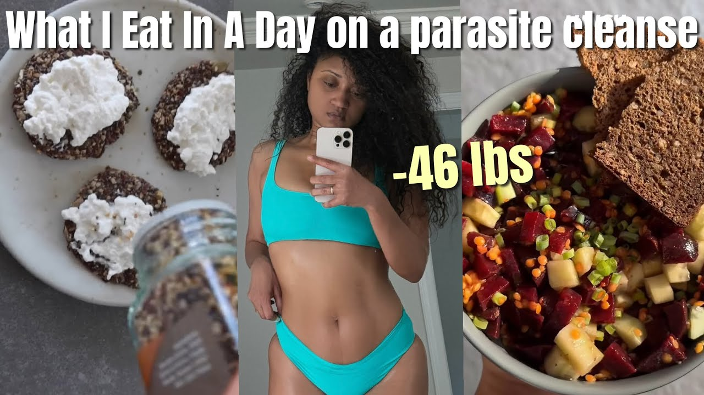
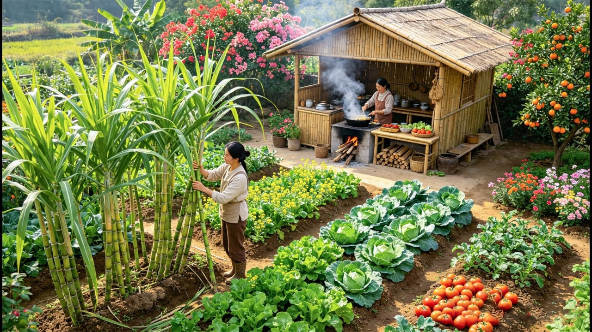
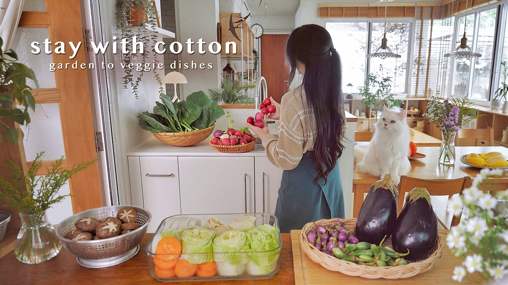

7:53

16:08

9:00
cozy cooking at home 🧸 japanese food, comforting meals & simple routine
55K views · 5 days ago

19:57

18:35

3:35:30

38:11
Homegrown Vegetarian Meals 🍲🌿 | Relaxing Hair Day | Jab Chai | Kale Stir-Fry | Eggplant Dip | VLOG
384K views · 1 month ago
Cheesy Cheese Cream Kimchi Fried Rice. What I eat in a week in Korea
398K views · 10 months ago